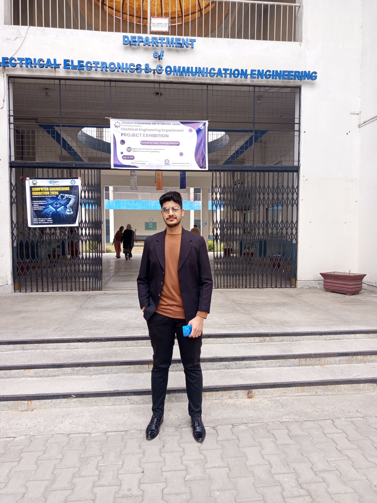

Portfolio Purpose
Computer Engineering Journey
My Learning Portfolio
This portfolio documents my growth as a computer engineering student through semester-wise blogs, project work, challenges, and practical learning.
The first section covers my 1st semester learning and challenges. The second section covers my 2nd semester database, machine learning, and Heart Failure Prediction System journey.
1st Semester
2nd Semester
Project Learning

To show real progress, not only final results.
I use this portfolio to keep my learning visible: what I studied, where I struggled, how I improved, and how classroom concepts turned into practical work.
Section 1
Early learning, pressure, programming basics, and first achievements.
Section 2
Database design, dataset work, ML model training, and deployment thinking.